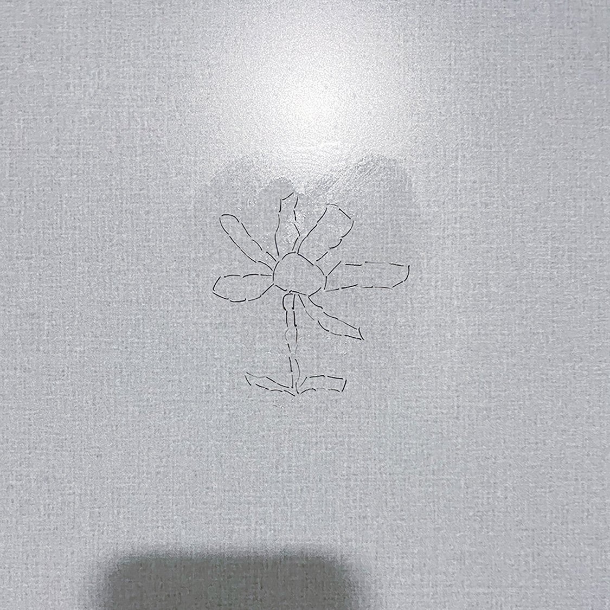

질문
<
Q: 안초롱
A: 재훈
Q1. 전시장으로 사용된 오피스텔, 이안 두드림 1224호는 작가님의 생활 공간인가요? 아니라면 이 전에 어떻게 사용되던 공간인가요?
A. 이안 두드림 1224호는 저의 생활 공간입니다. 올해 2월부터 거주하기 시작했습니다. 전시가 열리는 시간에는 작품을 설치해두고 나가있지만 그 전후 시간에는 똑같이 생활합니다.
Q2. <오래된 방은 궁전> 작업의 프레임이 된 옷장은 작가님이 본래 사용하던 집기였나요?
A. 작업에 사용된 옷장과 책장, 침대는 제가 본래 사용하던 집기입니다. 이안 두드림으로 이사 오기 전부터 계속 사용해왔습니다.
Q3. 전시에서 선보인 일련의 작업물의 작품 갯수(최종 셀렉된 사진 컷 수)를 알 수 있을까요? 이 질문을 드린 이유는 <끝없이 걷는 날>에서 동일한 사진 몇 장이 반복해서 보였기 때문입니다.
A. 바닥 몰딩에 설치된 <끝없이 걷는 날>과 침대 수납함 & 화장실 바닥에 설치된 <끝없이 걷는 날>은 각각 10장이 사용되었습니다. 5장 정도의 흑백 사진이 순서대로 나열된 뒤 또다른 사진이 등장하는 것이 기본 구조입니다. 기호로 표현한다면 다음과 같습니다.
12345 @ 12345 _ 12345 & 12345 (...)
Q4-1. <수염 드로잉(외딴 여자/수염바닥)> 중, ‘외딴 여자’에서 여성의 모습을 하는 형상의 손에 들려 있는 것이 무엇인지 궁금합니다.
A. 남성기입니다.
Q4-2. <수염 드로잉(외딴 여자/수염바닥)>의 원본 사이즈가 궁금합니다. 그리고 원본은 어떻게 보관하고 계신 중인지 궁금합니다.
A. '외딴 여자' - 가로 14cm 세로 34cm / '수염 바닥' - 가로세로 15cm 입니다. 원본은 도화지 위에 부착되어 있고, 그 도화지는 일반 수납 공간 안에 넣어두었습니다.
Q5. 플로어 플랜에는 없었지만, 화장실 문 뒤편에 <수염 드로잉> 설치로 보이는 작은 꽃이 보였는데요. 그 꽃 또한 본 전시의 일부였지만 일부러 플로어 플랜에는 빠져있었던 것으로, 작가님께서 의도하신 부분이 맞습니까?
A. 작은 꽃은 약 3개월 전, 화장실 벽에 여러가지 모양으로 <수염 드로잉>을 시도하던 때 그려진 것입니다. 이번 전시에서 <수염 드로잉>을 실물 수염이 아닌 사진 프린트로 보여줘야겠다는 선택을 한 이후로, 나머지 드로잉은 모두 지웠으나 어째서인지 그 작은 꽃 하나는 지우지 않았습니다.
전시 시작일이 점점 다가오고, 그 꽃을 마주할 때마다 '... 저걸 지워, 말어?' 번번이 고민했습니다. 결국 지우지 않았고, 작품 표기도 하지 않았습니다. 그랬을 때 저 드로잉의 위상은 원래 이 오피스텔에는 없었지만 제가 이곳에 거주하게된 이후로 함께 들여오게 된 옷장, 책장, 침대의 위상과 같다고 생각합니다. 전시가 끝나면 다른 작품들은 1224호에서 모두 철거되겠지요. 하지만 저 작은 꽃은 어째서인지 지워질 것 같지 않습니다.

<여름의 뒷면>과 <대기 시간>
안초롱, 재훈
2024.07.31
가동초등학교 2학년 김재훈
안초롱, 재훈
2024.07.31
<수염 드로잉>과 <오래된 방은 궁전>
안초롱, 재훈
2024.07.31
<거꾸로 뜨는 눈>과 작가라는 직업
안초롱, 재훈
2024.07.31
<끝없이 걷는 날>과 <무제> 그리고 사진
안초롱, 재훈
2024.07.31
그 소녀
안초롱, 재훈
2024.07.31